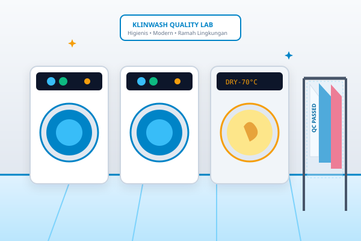

Visi Usaha
Menjadi jasa binatu dan perawatan pakaian pilihan utama di Rawamangun yang dikenal karena kebersihan, kerapian, dan ketepatan waktu pengerjaan.
KlinWash Laundry Express didirikan di Rawamangun, Jakarta Timur, dengan tujuan memberikan layanan pencucian pakaian yang higienis, rapi, dan terpercaya bagi masyarakat sekitar.
Berawal dari keinginan memberikan hasil cucian yang tidak berbau apek saat musim hujan dan tidak tercampur antar-pelanggan, KlinWash menerapkan aturan: satu mesin cuci untuk satu pelanggan.
Didukung oleh mesin cuci berkapasitas besar, air bersih terfiltrasi tiga tahap, serta setrika uap, kami melayani kebutuhan cuci pakaian mahasiswa, dosen, pekerja, hingga keluarga di area Rawamangun.

Prinsip yang kami pegang dalam memberikan pelayanan terbaik setiap hari.
Menjadi jasa binatu dan perawatan pakaian pilihan utama di Rawamangun yang dikenal karena kebersihan, kerapian, dan ketepatan waktu pengerjaan.
Tenaga kerja yang bertugas mengelola dan menjaga kualitas hasil cucian Anda.
Pemilik Usaha
Mahasiswa pengelola utama yang bertanggung jawab atas manajemen operasional, standar pelayanan, dan perkembangan usaha KlinWash.
Kepala Operasional
Bertanggung jawab atas proses pencucian, pemilahan jenis bahan, pengeringan, dan pemeriksaan hasil setrika sebelum dikemas.
Layanan Pelanggan
Melayani penerimaan pakaian di kasir, penimbangan laundry kiloan, serta penjadwalan kurir antar-jemput ke lokasi pelanggan.
Informasi peralatan yang digunakan untuk memastikan pakaian tercuci bersih dan higienis.
| Nama Fasilitas | Jenis Alat | Fungsi Utama | Status Perawatan |
|---|---|---|---|
| Mesin Cuci | Front Loading 12 KG | Mencuci pakaian tanpa merusak serat kain | Rutin Diperiksa |
| Mesin Pengering | Pengering Gas 70°C | Mengeringkan pakaian 100% dan bebas bau apek | Rutin Diperiksa |
| Filtrasi Air | Filter Sedimen & Karbon | Menyaring air agar jernih dan bebas kaporit | Pembersihan Berkala |
| Peralatan Setrika | Setrika Uap Boiler Gas | Merapikan pakaian dengan panas uap merata | Pengecekan Harian |
| Kemasan Pakaian | Plastik PP Higienis Rapat | Menjaga pakaian tetap bersih saat diantar | Standar Higienis |